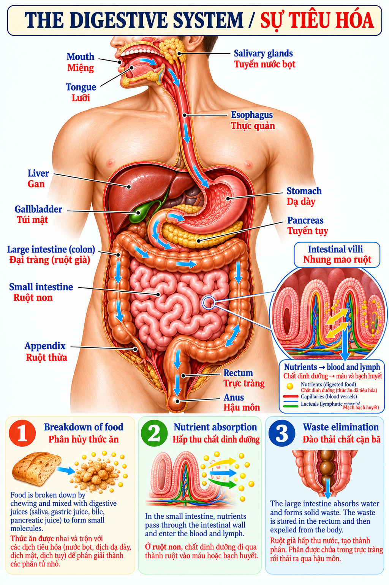

🇬🇧 MINI QUEST · GAME #04
🧩 Mission Digestion
The journey of food · Review the digestive system
Mission 1 / 3⭐ 0 points

Review the lesson and continue playing!
The journey of food · Review the digestive system

Review the lesson and continue playing!